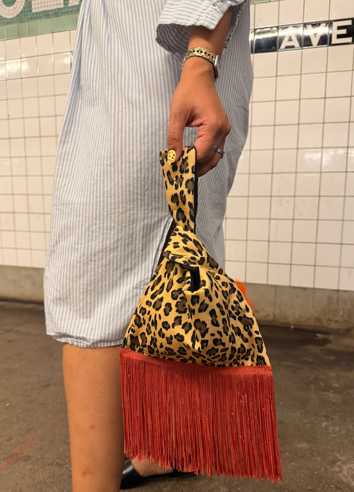
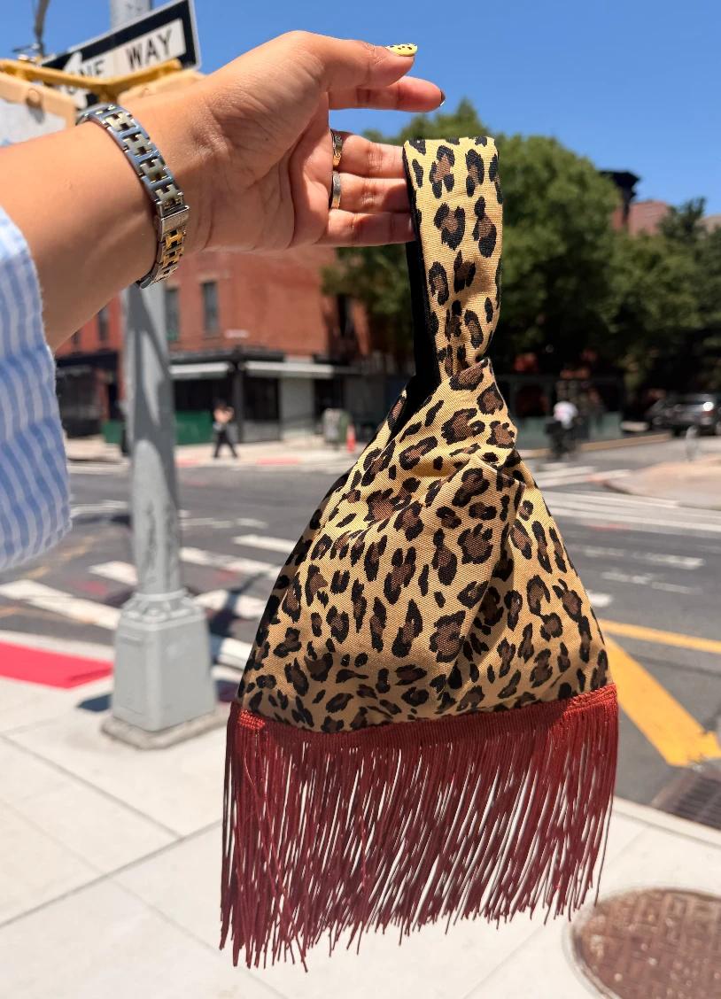
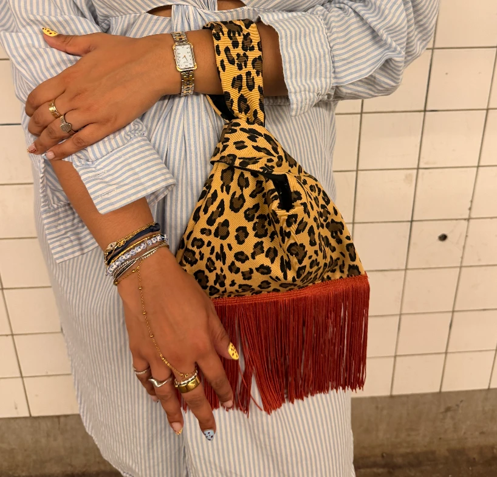

Handmade in New York
The bag lady is making bags.
After years of hunting vintage designer bags, Dizzy started making her own, one at a time, for friends first. Now they're almost ready for you.

The first bags
The leopard knot
A soft knot bag in leopard print, finished with a long rust fringe that swings when you walk. Slip the handle over your wrist and go. The first few were made for friends. The next ones will be made for the list.


- Made by hand, one at a time
- Carry on the wrist or looped in hand
- Tested on the G train
Who's Dizzy
Finance by day. Bag lady always.
Dizzy works in finance in New York and has spent years hunting vintage designer bags on Goodwill auctions, eBay and in small consignment shops. She keeps a strict “materiality threshold” and usually breaks it for a Fendi Baguette.
Her newsletter covers the finds, and also tariffs, fast fashion, Y2K nostalgia and the women in her family who taught her that a good bag gets handed down. Her own bags come from the same place.
xx, dizzy
-
Made by a person
Not in a factory. By hand, by Dizzy.
-
Built to last
Buy less, buy better. That goes for her bags too.
-
Meant to be handed down
Like her mom's vintage Gucci. Like her grandma's Mulberry.
From the newsletter
Dizzy's Designer Dreams
Vintage finds, resale deals and unsolicited opinions. Even our shopping carts are political.

Is the Handbag Over?
WRONG QUESTION!

Shein, Everlane, and the Death of the Quince Era
How fast fashion learned to speak the language of responsible consumption and why the middle is collapsing.

Spring Always Wins
On freezing Januaries, forced resets, and the version of life that actually feels aligned
First dibs
Get on the list.
Subscribe to the newsletter and you'll hear about each new bag before anyone else, along with Dizzy's weekly designer dreams.
Trouble with the form? Subscribe on Substack.
Say hi
Custom orders, questions, bag gossip.
Write to dizzymirrors@outlook.com. Traditional snail mail works too.